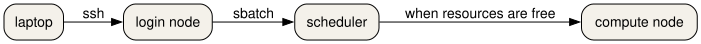

What a supercomputer is
Last updated on 2026-10-26 | Edit this page
Overview
Questions
- What is different about a supercomputer and the computer on your desk?
- How do you log in to Snellius, and how is the course cluster different?
Objectives
- Describe a supercomputer as a login node, a scheduler, and compute nodes.
- Identify a login hostname and a compute hostname from a written example.
- Connect to Snellius with SSH after the SURF user portal step.
- Connect to the course cluster with the address in your welcome note.
- Predict what a long computation does to a shared login node.
A room of computers, with a door
A supercomputer is not a bigger laptop. It is many computers in one room. They share a door, a queue, and file systems. You talk to the door. A scheduler decides when your work may run on a computer in the room.
You will meet three roles.
- The login node is the door. You reach it with SSH, or with a web shell. It is shared with everyone else who is logged in. It is the right place to edit a script, look at a small file, and submit a job. It is the wrong place to run the job.
- The scheduler is the queue. On Snellius and on the course cluster the scheduler is Slurm. You describe the resources you need. Slurm starts the work when those resources are free.
- A compute node is where the work runs. You do not SSH there for a normal batch job. Slurm starts your script on that node and writes the text output to a file.

Snellius
Snellius is the Dutch national supercomputer, operated by SURF. The public description is at https://www.surf.nl/en/services/compute/snellius-the-national-supercomputer. Before the first SSH login you sign in to the SURF user portal, CUA. The account email comes from SURF and names your login.
From your own computer:
Your prompt is on a login node. It looks like
YOUR_LOGIN@int4:~$. The int names are login
nodes. A compute node has a different name. If the network you are on is
not trusted, SURF documents a separate door node in the service desk.
Use that host when the welcome mail tells you to.
You can also work in a browser through Open OnDemand. That page gives you a shell, a file manager, and a few applications. The shell is still a login node.
A password prompt on the login node is normal. A job does not start because you logged in. Logging in only gives you the door.
The course cluster
This course also uses a small cluster built from SURF Research Cloud workspaces. The template is Magic Castle: https://github.com/ComputeCanada/magic_castle. Your trainer sends a setup link. That link creates your password. There is one login node, and there is no CUA account.
MANAGER is the address in the welcome note. It is not
snellius.surf.nl. The nodes have two cores each, with more
cores on the GPU node. Ethernet stands in for the fast network Snellius
uses. The partition names rome and thin_course
point at the same CPU nodes. The gpu partition holds the
GPU cards.
There is no project budget on the course cluster.
accinfo is not installed. sacct still reports
core-seconds in CPUTimeRAW. On Snellius your project does
have a budget, counted in system billing units. You do not need the
budget command for the exercises in this lesson.
A faded login
Fill the blank for the machine you are actually using.
On Snellius the host is snellius.surf.nl and the name is
your CUA login. On the course cluster both values come from the welcome
note.
The sample SSH config in
episodes/files/ssh-config-sample is the Snellius shape:
Predict the hostname
You are about to run hostname after logging in. Write
down what you think the name will start with, before you run it.
On Snellius, which of these is a login node: int4, or
tcn123?
int4 is a login node. Names that start with
int are the shared door. A name like tcn123 is
a compute node. You should see an int name when you run
hostname on Snellius just after SSH. On the course cluster
there is one login node, and its name is the one in your welcome note,
not an int name.
It reads HostName from
episodes/files/ssh-config-sample and exits with an error if
that value is not snellius.surf.nl. A course-cluster
address belongs in a different Host block, not in this
one.
On Snellius, hostname starts with int and
sinfo -s lists partitions such as rome and
genoa. On the course cluster, sinfo -s shows
the small partitions, including thin_course or
rome. who shows other people on the login
node. That is the reminder: the door is shared.
The container prints its own hostname. That name is the container,
not a SURF node. You use it for the software exercises, not as a
substitute for sinfo.
What you do next
You have a shell on a shared door. The next episode loads the software you will run. The episode after that sends the work through Slurm so it does not stay on this door.
- A supercomputer is a login node, a scheduler, and compute nodes.
-
ssh YOUR_LOGIN@snellius.surf.nlreaches Snellius after you have a CUA account. - The course cluster is a Magic Castle workspace. Its address is in your welcome note.
-
hostnameon a Snellius login node starts withint. - A long computation does not belong on the login node.